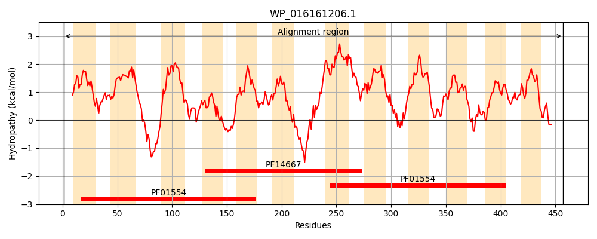
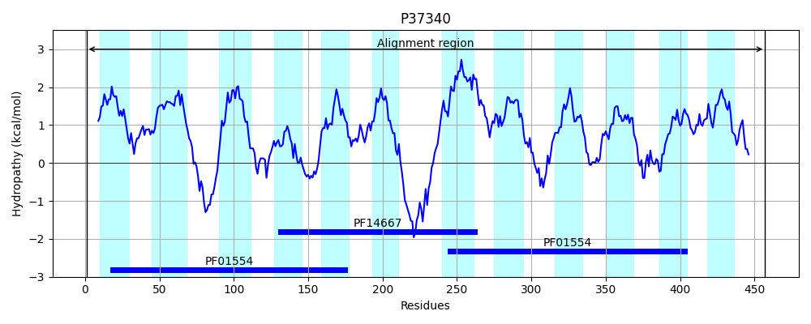
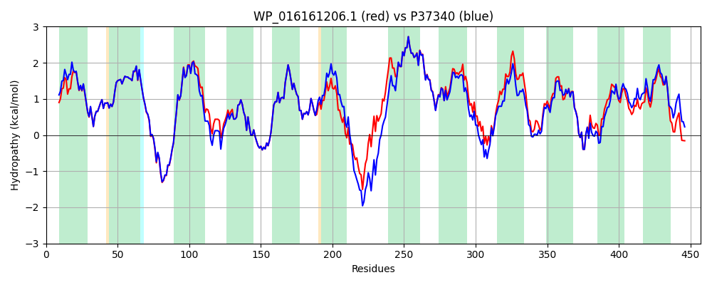

Hit Accession: P37340
Hit TCID: 2.A.66.1.3
Hit Description: gnl|BL_ORD_ID|10094 gnl|TC-DB|P37340|2.A.66.1.3 Multidrug resistance protein norM (Na(+)/drug antiporter) (Multidrug- efflux transporter) - Escherichia coli.
Mach Len: 457
e:0.000000
Query TMS Count : 12
Hit TMS Count: 12
TMS-Overlap Score: 12.500000
Predicted Substrates:CHEBI:23614;deoxycholate, CHEBI:4796;enoxacin, CHEBI:7629;norfloxacin, CHEBI:9731;trimethoprim, CHEBI:28915;fosfomycin, CHEBI:3603;chloramphenicol, CHEBI:2496;doxorubicin, CHEBI:42478;ethidium
BLAST Alignment:
Score: 2046 , Bit scores: 792 bits, E-value: 0.0e+00, Alignment length: 457, Percentage identity: 88
Query: 1 MQKYFVEARQLLALAIPVILAQVAQTAMGFVDTVMAGGYSATDMAAVAIGTSIWLPAILFGHGLLLALTPVVAQLNGSGRRDRIAQQVRQGFWLAGFVSVLIMVVLWNAGYIISSMHNIDPLLAEKAVGYLRALLWGAPGYLFFQVARNQCEGLAKTKPGMVMGFIGLLVNIPVNYIFIYGHFGMPELGGVGCGVATASVYWVMFASMLWWVRRARSMRDIRCAEHFSRPDFAVLLRLVQLGLPIALALFFEVTLFAVVALLVSPLGIIDVAGHQIALNFSSLMFVLPLSLAAAVTIRVGFRLGQGSTIDAQVSARTGVGVGVCLAVFTAIFTVLMREQIALLYNDNPEVVLLASHLMLLAAIYQISDSIQVIGSGILRGYKDTRSIFFITFTAYWVLGLPSGYLLALTDMVVPRMGPAGFWCGFIIGLTSAAIMMMLRMRFLQRQPSSIILQRAAR 457
MQKY EAR LLALAIPVILAQ+AQTAMGFVDTVMAGGYSATDMAAVAIGTSIWLPAILFGHGLLLALTPV+AQLNGSGRR+RIA QVRQGFWLAGFVSVLIM+VLWNAGYII SM NIDP LA+KAVGYLRALLWGAPGYLFFQVARNQCEGLAKTKPGMVMGFIGLLVNIPVNYIFIYGHFGMPELGGVGCGVATA+VYWVMF +M+ +++RARSMRDIR + ++PD AV+ RL+QLGLPIALALFFEVTLFAVVALLVSPLGI+DVAGHQIALNFSSLMFVLP+SLAAAVTIRVG+RLGQGST+DAQ +ARTG+ VGVC+A TAIFTV +REQIALLYNDNPEVV LA+HLMLLAA+YQISDSIQVIGSGILRGYKDTRSIF+ITFTAYWVLGLPSGY+LALTD+VV MGPAGFW GFIIGLTSAAIMMMLRMRFLQR PS+IILQRA+R
Sbjct: 1 MQKYISEARLLLALAIPVILAQIAQTAMGFVDTVMAGGYSATDMAAVAIGTSIWLPAILFGHGLLLALTPVIAQLNGSGRRERIAHQVRQGFWLAGFVSVLIMLVLWNAGYIIRSMENIDPALADKAVGYLRALLWGAPGYLFFQVARNQCEGLAKTKPGMVMGFIGLLVNIPVNYIFIYGHFGMPELGGVGCGVATAAVYWVMFLAMVSYIKRARSMRDIRNEKGTAKPDPAVMKRLIQLGLPIALALFFEVTLFAVVALLVSPLGIVDVAGHQIALNFSSLMFVLPMSLAAAVTIRVGYRLGQGSTLDAQTAARTGLMVGVCMATLTAIFTVSLREQIALLYNDNPEVVTLAAHLMLLAAVYQISDSIQVIGSGILRGYKDTRSIFYITFTAYWVLGLPSGYILALTDLVVEPMGPAGFWIGFIIGLTSAAIMMMLRMRFLQRLPSAIILQRASR 457 | Protein Hydropathy Plots: |
|---|
|  |  |
Pairwise Alignment-Hydropathy Plot:
|
|---|
|  |